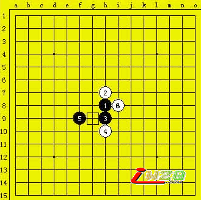
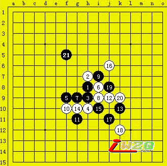
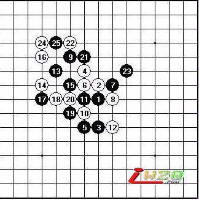
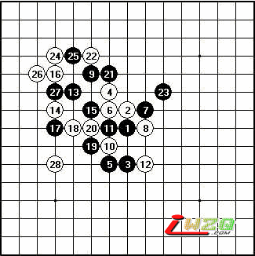
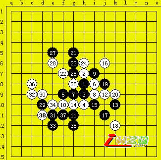
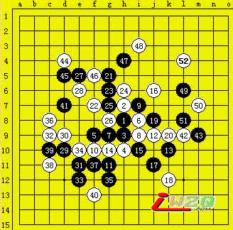

第五届上海名人邀请赛复赛第三轮山口釉水vs吴昊
#1 第五届上海名人邀请赛复赛第三轮山口釉水vs吴昊 作者：有志青年 发表时间：2007-5-4 7:21:03
原文地址：http://www.shwzq.com/online/ShowArticle.asp?ArticleID=1305
(09:24) 评论员 许斌 说：大家好,我是今天的直播员许斌.
(09:26) 评论员 许斌 说：现在由我为大家直播复赛上半区的比赛,山口釉水执黑对抗吴昊执白
(09:31) 评论员 许斌 说：吴昊开出松月,山口交换
(09:32) 评论员 许斌 说：实战选择三打，黑进攻有非常激烈的变化.

现在对局进行到21手，双方前几步的行棋都中规中矩，黑21率先变招,通常是走F5这个点,山口为了求变走了G5这个点,吴昊实战应对了也比较稳妥,山口后面的一系列变化都是最强的变化

在转播中我们会实时穿插著名棋手朱建锋六段vs日本新秀之王冈部宽七段的实战对局。如图，瑞星开局，冈部执黑，朱建锋未交换。白12非大定手，有分出胜负的决心

(09:49) 评论员 许斌 说：让我们回到比赛现场，山口和吴昊落子如飞。27手后，现在时间上山口1:06 vs吴昊1:12，棋谱登记似乎有误，正在更正核对..请各位谅解
(10:00) 评论员 许斌 说：黑21率先变招,通常是走F5这个点,山口为了求变走了G5这个点,吴昊实战应对了也比较稳妥,山口后面的一系列变化都是最强的变化
(10:02) 评论员 许斌 说：30手切断了黑棋上下的联系
(10:10) 评论员 许斌 说：吴昊开始长考
(10:13) 评论员 许斌 说：山口55分钟.吴昊52分钟
(10:15) 评论员 许斌 说：吴昊32继续分断山口上下联系,黑33山口打算在下面局部强攻的一个手段
这时候朱建锋六段与冈部七段的对局已经结束了！本届名人战因身体状况战绩欠佳的上海年轻棋王、应届全国冠军朱建锋抓33速胜。

完局如上，朱建锋六段执白28手胜
回到山口釉水vs吴昊的比赛现场，棋谱已经更正完毕。场外普遍认为27手有问题。
(10:21) 评论员 许斌 说：山口黑35想把左右联系起来,吴昊36活三,制造了一个长连
(10:23) 评论员 许斌 说：实战吴昊走了C11这个点..
(10:30) 评论员 许斌 说：山口转攻为防了

(10:40) 评论员 许斌 说：松月变化，山口在同曹冬的对局中已经吃过一次亏了，所以想来本局他会加倍小心，不会轻易涉险的。
(10:41) 评论员 许斌 说：现在山口的黑47 意图很明显就是在消除白外围的拓展空间。
(10:41) 评论员 许斌 说：吴昊自然不甘示弱，要取得好名次，只有拼命了。
(10:42) 评论员 许斌 说：白48后白棋右边都是可以做棋的地方，领域广阔大有作为。
(10:45) 评论员 许斌 说：果然，山口的黑49开始回防。
(10:45) 评论员 许斌 说：目前双方剩余时间都还有30多分钟，应该是和棋。

(10:46) 评论员 许斌 说：和棋对于双方都有好处。
(10:47) 评论员 许斌 说：果然是和棋，吴昊提和了。对局结束。
(10:48) 评论员 许斌 说：上半区最后一局也结束了，俞满江取胜。
(10:48) 评论员 许斌 说：好，谢谢大家观看比赛。下午最后一轮的比赛将在14：00进行直播。谢谢。